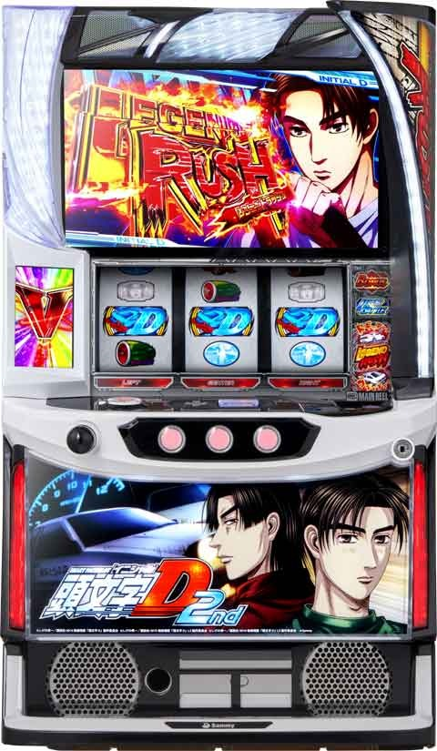
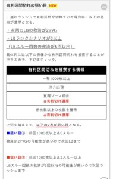
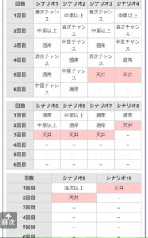

L頭文字D 2nd

【天井情報】
599G+α レジェンドバトル(CZ-AT)当選
リセット時は50%で299G+α
天井到達後は次回天井 299G+α
【リセット判別】
不明
【有利区間について】
エンディング到達で覚醒モードに移行
レジェンドバトル(CZ-AT)スルー回数天井 6スルー
狙い目
【リセット狙い】
200Gから299Gの仮天井抜けたらやめ。
【レジェンドバトル間天井狙い】
朝イチ以外はデータ機と液晶G数が10Gズレます。
599-609G当選後は天井到達していないのでご注意ください。
・0から1スルー
天井非短縮 410Gから
天井短縮 100Gから
※即やめ台や100.300の高確は消化。
・2から4スルー
天井非短縮 450Gから
天井短縮 150Gから
・5スルー
積極派 0GからAT当選まで
慎重派 天井非短縮300Gから。天井短縮0Gから。
・6スルー
0Gから
※天井到達後AT挟んでも次回天井短縮は有効と思われる。
【一撃1000枚以上後狙いまとめ】
恩恵
・LBランク3以上(最大4スルー)
・0スルー時天井短縮の可能性アップ
①スルー別狙い目
0スルー 100Gから。または即やめ台を高確確認。100.300の高確は打つ。
LB当選時啓介敗北なら2スルー天井可能性アップなので、次回天井短縮ならもう一度LBまで。非天井短縮なら高確確認とボーダー下げる。中里以上敗北は高確確認してやめ。
1スルー 100.300の高確は打つ。天井狙いはボーダー下げる。LB当選時啓介敗北なら次のLBまで。中里以上出て敗北時は高確確認してやめ。
2スルー スルー天井の可能性上がるため0Gから。スルーした場合は、4スルー0Gからか、3スルーをボーダー下げて打つ。敗北した場合は他同様高確確認してやめ。
※前回中里以上を目視で確認、または知識ありそうな人が打っていた場合は高確確認とボーダー下げる程度にした方が良さそう。
3スルー 次回スルー天井のためボーダー下げる。高確は確認。
4スルー スルー天井のため0から。
②高確について
今回の狙い目は100.300の高確を積極的に見た方が良さそうなので液晶90.290くらいなら高確消化するのでも良さそう？
③ボーダー下げについて
ボーダー下げる場合は300高確あるので300Gから。天井短縮状態なら0から。ボーダー下げるケースでは高確は消化していく感じ。
参考元 必勝期待値クマぱぱ
【レジェンドバトルスルー間天井狙い】
積極派 5スルーから
慎重派 6スルーから
※スルー天井狙い時はメニュー画面と当選履歴を照らし合わせると間違いが減りそう。
【高確狙い】
不明
【有利区間切れ狙い】
不明
やめ時
初当たりのレジェンドバトル終了画面レッドサンズ、エンペラーはレジェンドバトルまで。
それ以外は即やめか次回中里以上が見込める様なら高確確認してやめ。
その他
有利区間切れについて

シナリオ

参考元
基本情報
- メーカー: サミー
- 機械割: 97.9% 〜 114.3%
- 導入開始日: 2024年10月07日（月）
- ゲーム性概要: ●ATタイプ（擬似ボーナス搭載） ●ATはループ型、純増 約2.4枚/G ●擬似ボーナス純増 約4.0枚/G ●通常時はレア役・ドリフト目で初当りを目指す ●ドリフト目の一部で突入するCZもあり ●3つの強力なトリガーも搭載 ●エンディング後の引き戻しチャンスあり


打ち方
打ち方・小役
通常時の打ち方（小役狙い）
「最初に狙う絵柄」

左リール上段付近にBARを目押し。
「中段チェリー停止時」
成立役…中段チェリー

「角チェリー停止時」
成立役…チェリーorチャンスチェリーorリーチ目チェリー

中＆右リールはフリー打ちでもOKだが、BARを狙うとチャンスチェリーが判別できるため、BAR狙いをオススメだ。
「BAR下段停止時」
成立役…ハズレorリプレイorベルorチャンス目Aorリーチ目A

「スイカ停止時」
成立役…スイカorチャンス目Borリーチ目Borリーチ目スイカ

中リールBARを目安にスイカを狙う。右リールはフリー打ちでOKだ。
「レア役の停止形（一例）」

ドリフト目はおもに逆押しの狙えカットイン契機で停止。チャンスチェリー成立時は、目押しがある程度正しくないと通常のチェリーと同じ停止形になる。
［狙えカットイン］

変則押しはNG

通常時、押し順ナビなし時は左リール第1停止での消化を推奨する。
AT中の変則押し
AT中は変則押しもOK。レア役やボーナスの1確目を出せるので、対応役が存在するレジェンドバトル中やボーナスがさらに嬉しい特化ゾーン中など、ここぞという場面でオススメだ。 ボーナスは基本的にリーチ目との同時当選なので、リーチ目成立を見抜いて楽しむこともできるぞ（リーチ目成立時に順押しをした場合、チェリーなどと同じ停止形を取ることがある）。
「中リールバスバ狙い」

中リールにバスバが止まればレア役以上濃厚。
［ボーナス濃厚パターン］

左リールにBARを狙い、下段に止まればボーナス濃厚。左右リールにドリフトを狙った場合、両方とも中段に止まればボーナス濃厚となる。
「中リールドリフト狙い」

チェリーはリプレイフラグなので、左リールは狙わなくても出玉的な損はナシ。
「中リール赤7狙い」

左リールD狙い
「最初に狙う絵柄」

左リール枠上〜上段にDを狙い、枠内にDが止まれば小役以上。
「D上段停止時」 成立役…リーチ目C


「D中段停止時」 成立役…スイカorチャンス目Borリーチ目スイカorリーチ目Bor中段チェリー


「D下段停止時」 成立役…リプレイorチェリーorリーチ目チェリーorリーチ目Aor中段チェリー


「ベル上段停止時」 成立役…ハズレorリプレイorベルorチャンス目Aorリーチ目A


中リールバスバ狙い（リーチ目察知手順）
「最初に狙う絵柄」

中リールにバスバを狙う。バスバ停止でレア役以上濃厚だ。
「BAR上段停止時」 成立役…ハズレorリプレイorリーチ目リプレイorリーチ目A


「中段ベル停止時」 成立役…ベル（こぼし）orリーチ目A


「バスバ停止時」 成立役…レア役以上

左リール上段にBARをビタ押しし、右リール上〜中段にBARを狙う。

中リールD狙い（リーチ目察知手順）
「最初に狙う絵柄」

中リール枠上〜上段にDを狙う。
「D上段停止時」 成立役…ハズレorリプレイorリーチ目リプレイorリーチ目A

左リールにDを狙い、右リールはフリー打ち。

「D中段停止時」 成立役…チャンス目orリーチ目チャンス目

左リールにDを狙う。

右リールはフリー打ちでもOKだが、Dが中段にテンパイした場合、右リールにもDを狙うと中段に揃う。
「D下段停止時」 成立役…スイカorリーチ目スイカorリーチ目Borリーチ目Cor中段チェリー

左リールに3連スイカを狙い、右リールはフリー打ち。

「ベル中段停止時」 成立役…ベル（こぼし）orリーチ目A

左&右リールはフリー打ちでOK。

「ベル上段停止時」 成立役…チェリーorリーチ目チェリー

左&右リールにBARを狙う。

中リールバスバ狙い

スイカ・チェリー・チャンス目・リーチ目の一部が第2停止まで同一の停止形を取るため、第3停止まで期待度を保ったまま打つことが可能だ。
「BAR上段停止時」 成立役…ハズレorリプレイorリーチ目Aorリーチ目リプレイ

左リールにDを狙い、右リールをフリー打ち。
「BAR下段停止時」 成立役…ベル（こぼし）orリーチ目A

左＆右リールはフリー打ちでOK。
「中リールバスバ停止時」 成立役…レア役以上

左リールにDを狙い、Dが中段に止まった場合は右リールにもDを目押し。 Dが下段に止まった場合はリーチ目C、スイカが上段に止まった場合はリーチ目B濃厚だ。

左リール3連スイカ狙い

左リール3連スイカ停止でリーチ目以上かつ、リーチ目スイカや中段チェリーのチャンス。
「3連スイカ停止時」 成立役…リーチ目Corリーチ目スイカor中段チェリー

リーチ目以上濃厚の超激アツ出目。
「スイカ中下段停止時」 成立役…リプレイorチェリーorスイカorチャンス目Borリーチ目B

レア役orリプレイの出目。右リールをフリー打ちし、スイカがテンパイしたら中リールにBARを狙おう。
「スイカ下段停止時」 成立役…ハズレorリプレイorベルorチャンス目Aorリーチ目A

中＆右リールはフリー打ちでOK。
左リール赤7狙い

赤7下段停止でレア役以上、赤7中段停止でリーチ目フラグ（以上）濃厚。 中リールバスバ狙いに比べてリーチ目が停止しづらいので、レア役orリーチ目をあえて判別せずに楽しむことができる。
「赤7中段停止時」 成立役…リーチ目スイカor中段チェリーorリーチ目C

リーチ目スイカor中段チェリーとリーチ目Cを同時に狙うことはできないので、中リールバスバ狙いを推奨。バスバが止まらなければリーチ目Cとなる。

「赤7下段停止時」 成立役…チェリーorスイカorチャンス目Borリーチ目B

中リールにバスバを狙う。中リール中段にBARが止まった場合は右リール上段に赤7が止まればリーチ目B。

「ベル上段停止時」 成立役…ハズレorリプレイorベルorチャンス目Aorリーチ目A


逆押しD狙い

Dが揃えばボーナスというシンプルな打ち方。細かいフラグの判別はできないので、わかりやすさ重視で楽しみたい時にオススメだ。
チェリーやチャンス目がリプレイ揃いとなるので、レジェンドバトル中は第3停止後に勝利告知が入るかという少しマニアックな楽しみ方も出きる。
「ベル上段停止時」 成立役…ハズレorベル

「スイカ下段停止時」 成立役…スイカ

「D上段停止時」 成立役…ハズレ

「D中段停止時」 成立役…リプレイor3枚ベルorレア役以上


「D下段停止時」 成立役…リーチ目リプレイ


リーチ目／出目法則
リーチ目例
「左リールBAR狙い」

「左リールD狙い」

「中押しバスバ狙い」

「左リール赤7狙い」

「中押しD狙い」

「中押し赤7狙い」

中段チェリー
中段チェリーの恩恵
| タイミング | 恩恵 |
|---|---|
| 通常時 | ● レジェンドボーナス ● ATレベル3以上 |
| レジェンド バトル中 | ● レジェンドボーナス ● レジェンドバトル勝利 ● AT継続ストック獲得 |
| AT中 （秋名山ステージ） | ● レジェンドボーナス ● 上乗せ＋100G以上 |
| 満月ステージ | ● レジェンドボーナス ● 特殊バトル勝利 |
| 特殊バトル | ● レジェンドボーナス ● 特殊バトル勝利 |
| 限界領域 | ● レジェンドボーナス ● 次回拓海先行 |
| ボーナス中 | ● AT継続ストック複数獲得 |
| エピソード ボーナス中 | ● レベル3の限界領域 |
| その他 | ● レジェンドボーナス |
※中段チェリー確率は通常時：1/32768.0、AT中：1/16384.0
解析情報通常時
小役関連
通常時・小役確率
| 役 | 当選率 |
|---|---|
| チェリー | 1/69.0 |
| スイカ | 1/86.7 |
| チャンス目 | 1/256.0 |
| リーチ目スイカ | 1/32768.0 |
| 中段チェリー | 1/32768.0 |
| ドリフト目（※） | 1/17.2 |
| D揃い（※） | 1/728.2 |
| ドリフト目込み・レア役合算 | 1/28.3 |
| ドリフト目抜き・レア役合算 | 1/32.7 |
| チャンス目・ドリフト目合算 | 1/117.4 |
※ドリフト目とD揃いは狙え高確中の確率
通常時のチャンスチェリー・ベル揃い確率
| 設定 | チャンスチェリー | ベル揃い（※） |
|---|---|---|
| 1 | 1/1820.4 | 1/14.6 |
| 2 | 1/1724.6 | 1/14.4 |
| 3 | 1/1638.4 | 1/14.2 |
| 4 | 1/1560.4 | 1/13.5 |
| 5 | 1/1489.5 | 1/13.3 |
| 6 | 1/1365.3 | 1/12.9 |
※押し順ナビが出る区間はゲーム数に含めない
狙え高確中のドリフト目・D揃い確率（設定1）
| 役 | 確率 |
|---|---|
| ドリフト目フェイク | 1/12.1 |
| ドリフト目 | 1/17.2 |
| D揃い | 1/728.2 |
| 狙えカットイン合算 | 1/7.0 |
| 狙えカットイン発生時の ドリフト目以上期待度 | 約42% |
狙え高確中以外・ドリフト目確率
| 設定 | 確率 |
|---|---|
| 1 | 1/1209.0 |
| 2 | 1/1205.0 |
| 3 | 1/1200.0 |
| 4 | 1/1085.8 |
| 5 | 1/987.3 |
| 6 | 1/984.7 |
初当り当選率
| 役 | 低確or通常 | 高確 |
|---|---|---|
| スイカ | 低 | 10.2% |
| チェリー | 3.1%～9.0% | 33.2% |
| チャンス目 | 25.0% | 100% |
| ドリフト目 | 25.0% | 100% |
| チャンスチェリー | 100% | 100% |
| D揃い | 100% | 100% |
チェリーの初当り当選率
| 設定 | 低確or通常 | 高確 |
|---|---|---|
| 1 | 3.1% | 33.2% |
| 2 | 3.5% | 33.2% |
| 3 | 3.9% | 33.2% |
| 4 | 5.5% | 33.2% |
| 5 | 7.0% | 33.2% |
| 6 | 9.0% | 33.2% |
レジェンドボーナス当選率
| 役 | 当選率 |
|---|---|
| 中段チェリー | 100% |
| リーチ目スイカ | 100% |
| 当選確率 | 1/16384.0 |
通常時・レジェンドボーナス当選時の恩恵
| No. | 恩恵 |
|---|---|
| 1 | レジェンドラッシュ |
| 2 | AT継続ストック1個以上 |
| 3 | ATレベル3以上 |
| 4 | 約1/8でロングフリーズ発生 |
通常時に当選したボーナスはレジェンドボーナス濃厚。AT中に当選した場合に比べて、恩恵も強力だ。
リールロック

リールロックの恩恵
| 段階 | 恩恵 |
|---|---|
| 1段階 | 約75%でレジェンドバトルorレジェンドボーナス |
| 2段階 | レジェンドバトル以上濃厚、 約25%でレジェンドボーナス |
| 3段階 | ロングフリーズ |
リールロック発生でレジェンドバトル以上当選の大チャンス。最大の3段階目到達でロングフリーズが発生する。
※ロングウェイトのみ発生するのが1段階、2段階目はロングウェイト＋リールロック
リールロック発生確率
| 段階 | 確率 |
|---|---|
| 1段階 | 1/2745.8 |
| 2段階 | 1/8244.1 |
| 3段階 | 1/131072.0 |
※1段階→2段階への発展率は約25%、2段階→3段階へは5.9%
内部状態関連
内部状態概要
| 項目 | 内容 |
|---|---|
| 種類 | 低確＜通常＜高確 |
| 状態で変化する要素 | レア役・ドリフト目成立時の レジェンドバトル当選期待度 |
| 昇格契機 | チェリー＜スイカ |
| 昇格契機 | 100G消化ごとの抽選、レジェンドバトル敗北時、 レジェンドラッシュ終了時 |
通常もしくは高確へ移行した場合、レア役契機の場合は10G、ゲーム数契機の場合は20Gの保証ゲーム数を獲得。保証ゲーム数消化後に転落抽選がおこなわれ、状態が継続した場合は再び保証ゲーム数が再セットされる。
狙え高確概要
| 項目 | 内容 |
|---|---|
| 移行契機 | 狙え高確チャンス中リプレイの約20% |
| 継続ゲーム数 | 10G |
| 滞在中の恩恵 | ドリフト目停止期待度が大幅アップ |
| 滞在中の恩恵 | 10G間での停止期待度は約45% |
100G消化ごとの期待度
| ゲーム数 | 内部状態移行 | 狙え高確チャンス移行 |
|---|---|---|
| 1G | ○ | 必ず移行 |
| 101G | ○ | 必ず移行 |
| 201G | △ | 必ず移行 |
| 301G | ○ | 必ず移行 |
| 401G | △ | 必ず移行 |
| 501G | ○ | 必ず移行 |
※期待度…△＜◯
100G、300G、500G消化時は通常以上への移行濃厚だ。
200G・400G消化時の高確移行率
100Gごとに、50G間継続する狙え高確に行きやすい状態（狙え高確チャンス）へ移行。 狙え高確チャンス中にリプレイを引けば約20%で狙え高確へ移行 する。末尾1〜50G以外で狙え高確に移行した場合、次回レジェンドバトルの対戦相手が岩城清次以上の可能性がアップ。 レジェンドバトル終了後（1G）や301G・501Gは狙え高確チャンスだけでなく、高確移行にも期待できる。
内部状態転落率
内部状態が昇格した場合、レア役契機は10G、ゲーム数消化契機は20Gの保証ゲーム数を獲得。保証が終了すると転落抽選がおこなわれる。この転落抽選は必ず転落するわけではなく、通常や高確が継続することもある。継続した場合、再び保証ゲーム数（10G）が再セットされる。
保証ゲーム数消化後の内部状態移行率
| 移行先 | 通常滞在時 | 高確滞在時 |
|---|---|---|
| 低確 | 66.8% | 56.6% |
| 通常 | 33.2% | 10.2% |
| 高確 | ー | 33.2% |
ドリフトゾーン（CZ）
ドリフトゾーン概要

ドリフト目成立時の一部で突入するチャンスゾーンで、成功時はレジェンドラッシュへ直行。失敗時の一部で上位CZのインフィニティドリームへ突入。 ドリフトゾーン中はドリフト目高確になっている（ドリフト目も成功濃厚）。
ドリフトゾーン性能
| 項目 | 内容 |
|---|---|
| 突入契機 | ドリフト目の一部 |
| 継続ゲーム数 | 15G |
| 成功時の恩恵 | AT（レジェンドラッシュ）直行 |
| 成功期待度 | 約75%（レア役は成功濃厚） |
| 失敗時 | 一部でインフィニティドリームへ昇格 |
ドリフトゾーン確率
※確率の分母は通常時のゲーム数
ドリフトゾーン中のドリフト目＆D揃い確率
| 役 | 確率 |
|---|---|
| ドリフト目 | 約1/20 |
| 中段D揃い | 約1/862 |
| 斜めD揃い | 約1/4369 |
| D揃い合算 | 約1/720 |
ドリフトゾーン中のD揃いはレジェンドボーナス濃厚。
インフィニティドリーム（CZ）
インフィニティドリーム概要

ドリフトゾーン失敗時の一部で突入。突入した時点でAT突入は濃厚で、成功させればロングフリーズが発生する激アツCZだ。
インフィニティドリーム性能
| 項目 | 内容 |
|---|---|
| 突入契機 | ドリフトゾーン失敗時の10.2% |
| 継続ゲーム数 | 15G |
| 成功時の恩恵 | ロングフリーズ発生 （AT＋限界領域＋ナイトメアマシン） |
| 成功期待度 | 約75% |
| 失敗時 | AT（レジェンドラッシュ）突入 |
前兆
前兆（秋名山ステージ）中のドリフト目成立時の抽選
| 項目 | 内容 |
|---|---|
| フェイク前兆中 | 本前兆に書き換え |
| 本前兆中 | 対戦相手の昇格抽選 |
※ドリフト目が成立したタイミングでレジェンドバトルを告知
秋名山ステージ中のドリフト目はレジェンドバトル濃厚で、本前兆中だった場合は対戦相手の昇格も抽選。
ドリフト目は成立した時点でレジェンドバトルが告知されるため、チェリー成立で秋名山ステージへ移行→秋名山ステージ中にドリフト目を引いてレジェンドバトルを告知というパターンでも、チェリーで当たっていた可能性はある。
レジェンドバトル本前兆中の対戦相手昇格当選率
| 役 | 高橋啓介or中里毅 | 岩城清次 |
|---|---|---|
| チャンス目・ドリフト目 | 25.0% | 4.7% |
| スイカ | 1.6% | 0.4% |
| チェリー | 1.6% | 0.4% |
| チャンスチェリー | 100% | 100% |
昇格は高橋啓介→中里毅→岩城清次→高橋涼介の順に1段階ずつが基本パターン。ただし、現在の対戦相手が高橋啓介の場合に限り、スイカで昇格に当選した場合は岩城清次以上が濃厚となる。
［低確・通常中］チェリー契機の前兆当選率
| 設定 | フェイク前兆 | 本前兆 |
|---|---|---|
| 1 | 9.4% | 3.1% |
| 2 | 9.4% | 3.5% |
| 3 | 9.4% | 3.9% |
| 4 | 9.4% | 5.5% |
| 5 | 9.4% | 7.0% |
| 6 | 9.4% | 9.0% |
低確・通常中のチェリー契機のレジェンドバトル当選率は高設定ほど高いが、フェイク前兆の発生率は全設定共通。つまり、設定1の場合は秋名山ステージへ移行した時点で本前兆期待度約25%、設定6なら本前兆期待度は約50%ということになる。
前兆ゲーム数の法則
| 前兆種別 | ゲーム数 |
|---|---|
| フェイク前兆 | 14～17G |
| 本前兆 | 7～9G、12～18G |
秋名山ステージ突入〜連続演出終了までが前兆ゲーム数。フェイク前兆は14〜17Gから選ばれるため、このゲーム数よりも短いor長いゲーム数で連続演出が終了すれば本前兆となる。
演出動画
ロングフリーズ
リールロック3段階目や、インフィニティドリーム成功時に発生。ATレベル3以上、限界領域、ナイトメアマシンスタートなど、多数の恩恵を得られることもあり、期待枚数は約3600枚と超強力だ。
フリーズ
ロングフリーズ性能
| 項目 | 内容 |
|---|---|
| 契機 | 通常時のレジェンドボーナス当選時の約1/8、 インフィニティドリーム成功時 |
| 恩恵 | AT継続ストック1個以上、ATレベル3以上、 限界領域（レベルMAX）、ナイトメアマシン |
| 期待枚数 | 約3600枚 |
解析情報ボーナス時
レジェンドバトル
レジェンドバトル概要

初当りのメインとなるのはレジェンドバトル。チャンスAT的な位置づけで、 バトルに勝利できればレジェンドラッシュ（AT）濃厚 だ。 プロローグとバトルの2部構成となっていて、プロローグが進むほど勝利期待度がアップ。
対戦相手に応じて最低1個設定される対応レア役を引いた場合は勝利濃厚となるほか、後半はベル入賞時に勝利抽選がおこなわれる。ATゲーム数消化後は再びレジェンドバトルに突入するので、バトルに負けるまでATは終わらない。
レジェンドバトル性能
| 項目 | 内容 |
|---|---|
| 突入契機 | 通常時の抽選、ATゲーム数消化後 |
| 継続ゲーム数 | 16G＋α |
| 1Gあたりの純増 | 約2.4枚 |
| 消化中の抽選 | プロローグが継続するごとにベルメーター強化 or対応役を加算 |
| 消化中の抽選 | ベルで勝利抽選、対応役成立で勝利濃厚 |
| 消化中の抽選 | ボーナス時は勝利かつ、次セットの勝利も濃厚 |
「プロローグ」

プロローグ1から始まり、3Gごとに継続を抽選（初回は必ず継続）。継続するたびにベルメーター強化or対応役が加算される。プロローグを完走した場合は継続濃厚で、プロローグ中に対応役が成立した場合やボーナスを引いた場合も継続濃厚だ。
「ベルメーター」

サブ液晶のメーターの色で、ベル成立時の勝利期待度を示唆している（勝利抽選はベル成立時の第3停止後）。
「バトル」

ベル成立で勝利のチャンス。対応レア役は勝利濃厚。
「対応役」

液晶右下に対応役を表示。赤＝チェリー、緑＝スイカ、紫＝チャンス目に対応している。
「レア役の告知頻度カスタム」

対戦相手決定画面で上下キーを押すと、バトル中のレア役成立時の演出発生頻度をカスタム可能。
フルブースト


弱点役が全点灯した状態がバトル敗北まで継続するのがフルブースト。高橋啓介バトル勝利時の一部や、高橋涼介バトルで完全勝利した場合にフルブーストへ移行する。
高橋啓介勝利時のフルブースト当選率
| 契機 | 当選率 |
|---|---|
| 高橋啓介勝利時 | 約5% |
※初当り時、AT中のどちらのバトル中も当選率は共通
開始画面（二人が対峙している画面）の拓海の服装が「紺色の啓介対応服」になっている場合、勝てばフルブースト濃厚となる。
対戦相手の特徴
| 対戦相手 | 勝利期待度 | 初期対応役 | 初期 ベルメーター |
|---|---|---|---|
| 高橋啓介 | 約35% | チャンス目 | 白 |
| 中里 毅 | 約60% | スイカ | 青 |
| 庄司慎吾 | 約65% | チェリー | 青 |
| 小柏カイ | 約75% | スイカ | 黄 |
| 岩城清次 | 約80% | チェリー | 黄 |
| 真子＆沙雪 | 約90% | 全レア役 | 黄 |
| 須藤 京一 | 約95% | ナシ | 紫 |
| 高橋涼介 | 100% | チャンス目 | 白 |
対応役やベルメーターはプロローグを継続させるたびに増加・昇格する。
勝利時に恩恵のある対戦相手
| 対戦相手 | 内容 |
|---|---|
| 高橋啓介 | 勝利時の一部でフルブーストへ突入、 次回の対戦相手は高橋啓介を否定 |
| 岩城清次 | 次セットは満月ステージへ移行 |
| 真子＆沙雪 | 約50%で真子＆沙雪がループ |
| 高橋涼介 | 完全勝利（自力勝利）でフルブーストへ突入 |
初当り時のレジェンドバトル

初当り時（通常時に当選したレジェンドバトル）はAT中のレジェントバトルと異なる要素が存在する。
初当りレジェンドバトルの特徴
| No. | 特徴 |
|---|---|
| 1 | 対戦相手は高橋啓介・中里 毅・岩城清次・高橋涼介の4人 |
| 2 | スイカ契機のレジェンドバトルの対戦相手は岩城清次もしくは高橋涼介 |
| 3 | 開始時のDが斜めに揃った場合も対戦相手は岩城清次もしくは高橋涼介（基本は平行揃い） |
| 4 | 本前兆中の小役で対戦相手の昇格を抽選 |
| 5 | AT後1回目と2回目は勝利期待度の高い相手が選ばれやすく、レジェンドラッシュ期待度は約80% |
高橋涼介高確フラグ
レジェンドバトルで高橋涼介出現時は、自力で勝利できればフルブーストに突入するのでロング継続につながるポイントとなる。 一撃約1000枚を獲得すると、高橋涼介の出現率がアップする “高橋涼介高確フラグ” を獲得できる。
高橋涼介の出現条件
| No. | 条件 |
|---|---|
| 1 | 対戦相手抽選で高橋涼介に当選 |
| 2 | 高橋涼介が一度も出現していない10連目 |
高橋涼介高確フラグの獲得条件
| No. | 条件 |
|---|---|
| 1 | 一撃の獲得枚数が約1000枚を超える |
高橋涼介が出現した時点で高橋涼介高確フラグはなくなるが、そこから1000枚を獲得すると、再度フラグを獲得できる。
レジェンドバトルランクシナリオ

レジェンドバトルの対戦相手はバトル当選時に決定し、本前兆中のレア役で対戦相手の昇格を抽選。 内部的に存在するシナリオによってバトル回数ごとの対戦相手ランクが決まっていて、それよりも下の対戦相手が選択された場合は、強制的にランクに対応した相手に書き換えられる。
例）ランクが中里毅の場合に高橋啓介が選択された場合、対戦相手を中里毅に書き換え
レジェンドバトルランクシナリオ概要
| 項目 | 内容 |
|---|---|
| シナリオ | ● 設定変更時orAT終了時に10種類のシナリオの中から抽選で決定 ● 一度決まったシナリオはAT当選まで変化しない |
| ランク | ● シナリオとレジェンドバトルの回数でランクが変化 ● ランクに応じてレジェンドバトルの対戦相手を決定 |
| 天井回数 | ● レジェンドバトルの天井回数は1・2・3・5・7回（シナリオで変化） |
| その他 | ● AT後1回目と2回目は高いランクが選ばれやすいため、2回目までのAT当選期待度が約80%と高い |
シナリオごとのレジェンドバトル天井回数
| シナリオ | 回数 |
|---|---|
| 1 | 7回目 |
| 2 | 7回目 |
| 3 | 5回目 |
| 4 | 5回目 |
| 5 | 3回目 |
| 6 | 3回目 |
| 7 | 3回目 |
| 8 | 2回目 |
| 9 | 2回目 |
| 10 | 1回目 |
シナリオごとのランク種別
※シナリオ1と2の7回目が最大天井
ランクごとの対戦相手
| ランク | 対戦相手 |
|---|---|
| 通常 | 全対戦相手の可能性あり |
| 中里チャンス | 中里毅以上の期待度アップ |
| 清次チャンス | 岩城清次以上の期待度アップ |
| 中里以上 | 中里毅以上濃厚 |
| 清次以上 | 岩城清次以上濃厚 |
| 天井 | 勝利濃厚 |
ランク系の特徴・狙い目など
| No. | 内容 |
|---|---|
| 1 | ● ランクが中里以上なら、0Gから打っても機械割は100%以上 |
| 2 | ● レジェンドバトル0スルーの台は0Gからでも次のレジェンドバトル当選まで打てば機械割が100%以上 |
| 3 | ● 1回目が高橋啓介で敗北した場合、シナリオ1・3・5・7・8濃厚（次回中里以上or3回目が天井） |
| 4 | ● 1回目で高橋啓介に敗北、2回目も高橋啓介に敗北の場合、次回天井濃厚（3回目が天井にならないシナリオは、2回目までに中里毅以上が選択されるため） |
バトル中の抽選
プロローグが継続するたびにベルメーター強化or対応役が加算されるが、一度に2つの対応役が加算されたり、ベルメーター強化＋対応役加算というように、抽選が2回おこなわれることもある。プロローグ3から4への継続時は抽選が3回おこなわれる。
プロローグ継続回数振り分け
| プロローグの種類 | 高橋啓介 | 高橋啓介以外 |
|---|---|---|
| プロローグ1で終了 | ー | ー |
| プロローグ2で終了 | 46.9% | 43.0% |
| プロローグ3で終了 | 50.0% | 47.7% |
| プロローグ4で終了 | 2.7% | 9.0% |
| 次回予告発生 | 0.4% | 0.4% |
プロローグ継続時の獲得抽選回数振り分け
| 恩恵抽選 | プロローグ1→2 | プロローグ2→3 | プロローグ3→4 |
|---|---|---|---|
| 1回 | 94.9% | 94.9% | ー |
| 2回 | 5.1% | 5.1% | ー |
| 3回 | ー | ー | 100% |
恩恵振り分け
| 恩恵 | 振り分け |
|---|---|
| ベルメーター強化 | 50.0% |
| チャンス目点灯 | 31.3% |
| スイカ点灯 | 14.1% |
| チェリー点灯 | 4.7% |
ベルメーターごとのベル成立時勝利期待度
| ベルメーター | 期待度 | ベルでのトータル期待度 |
|---|---|---|
| 白 | 1.2% | 5.7% |
| 青 | 3.1% | 14.7% |
| 黄 | 7.0% | 30.5% |
| 緑 | 20.3% | 67.9% |
| 赤 | 33.2% | 86.7% |
| 紫 | 50.0% | 96.9% |
※ベルでのトータル期待度…バトル10G間の、ベルのみでの勝利期待度
レア役での勝利期待度
| 役 | 期待度 |
|---|---|
| 対応役 | 100% |
| 非対応時のチェリーorスイカ | 10.2% |
| 非対応時のチャンス目 | 50.0% |
内部的に勝利が決まった後は、限界領域の抽選がおこなわれる。
「レジェンドバトル中のリールロック」 レジェンドバトル中にリールロックが発生すればボーナス期待度は約86%。チャンス目以外が成立していた場合はボーナス濃厚となる。
通常時のレジェンドバトル・対戦相手の選択割合
※レジェンドバトルランクシナリオや前兆中の書き換え等を含んだトータルの割合
レジェンドラッシュ（AT）
レジェンドラッシュ概要

1セット30G＋α（2セット目以降は20G＋α）のゲーム数管理型AT。レア役などによるゲーム数上乗せやボーナスを絡めて出玉増加を目指すゲーム性で、ゲーム数消化後はレジェンドバトルへ移行して継続をジャッジする。
レジェンドラッシュ性能
| 項目 | 内容 |
|---|---|
| 突入契機 | 通常時の抽選、レジェンドバトル勝利後 |
| 継続ゲーム数 | 初回：30G＋α／2セット目以降：20G＋α |
| 1Gあたりの純増 | 約2.4枚 |
| 消化中の抽選 | ゲーム数上乗せ、満月ステージ移行、 特化ゾーン、ボーナス |
| ゲーム数消化後 | レジェンドバトルへ |
左リール第1停止時・ボーナス期待度
| 役 | 期待度 |
|---|---|
| リプレイ | 1.2% |
| チェリー | 6.5% |
| スイカ | 0.5% |
| チャンス目 | 36.3% |
| リーチ目 | 100% |
| 中段チェリー | 100% |
ボーナス当選確率＆当選契機割合
| 役 | 確率（設定1） | 割合 |
|---|---|---|
| リーチ目チェリー | 1/993.0 | 20.1% |
| リーチ目チャンス目 | 1/704.7 | 28.4% |
| リーチ目リプレイ | 1/720.2 | 27.7% |
| リーチ目 | 1/936.2 | 21.3% |
| リーチ目スイカ | 1/16384.0 | 1.2% |
| 中段チェリー | 1/16384.0 | 1.2% |
| 合算 | 1/199.8 | ー |
AT中は約1/199（設定1）のリーチ目フラグを引けばボーナス濃厚。 リーチ目フラグ成立時に左リールから止めた場合は、基本的にレア役やリプレイが停止するため、見た目上はチェリーなどからボーナスに当選したように見えるケースが多いが、中押しをすればリーチ目フラグを見抜くことも可能なので、アツい演出発生時は中押しもオススメだ。
リーチ目スイカ・中段チェリー契機のボーナスはレジェンドボーナス濃厚。ボーナスの本前兆中に再びリーチ目フラグを引いた場合もレジェンドボーナス濃厚となる。
ATレベル

レジェンドバトルの対戦相手振り分けが変化するATレベルが存在し、AT間のゲーム数が長いほど、レベル昇格の期待度が高い。 AT開始画面にATレベル示唆要素が存在する。
ATレベル昇格期待度
| AT間ゲーム数 | 期待度 |
|---|---|
| 500G | チャンス |
| 1000G | 大チャンス |
AT間のゲーム数が対象なので、間にレジェンドバトルを何度挟んでもOK。
AT中（レジェンドバトル中含む）の レア役・リーチ目フラグ確率（設定1）
| 役 | 確率 |
|---|---|
| チェリー | 1/64.5 |
| スイカ | 1/86.2 |
| チャンス目 | 1/256.0 |
| リーチ目チェリー | 1/993.0 |
| リーチ目チャンス目 | 1/704.7 |
| リーチ目リプレイ | 1/720.2 |
| リーチ目A | 1/3276.8 |
| リーチ目B | 1/1638.4 |
| リーチ目C | 1/6553.6 |
| リーチ目スイカ | 1/16384.0 |
| 中段チェリー | 1/16384.0 |
| レア役合算 | 1/29.8 |
| リーチ目役合算 | 1/199.8 |
ボーナス当選時の対戦相手昇格率
AT中（秋名山ステージ）にボーナスを引いた場合、次回レジェンドバトルの対戦相手昇格を抽選。当選時は基本的に1段階上の相手へと昇格するが、真子＆沙雪のみ、高橋涼介へと2段階昇格する可能性がある。
AT中のボーナス当選時・対戦相手昇格率
| 現在の相手 | 昇格率 | 昇格時の相手 |
|---|---|---|
| 高橋啓介 | 100% | 中里 毅 |
| 中里 毅 | 100% | 庄司慎吾 |
| 庄司慎吾 | 100% | 小柏カイ |
| 小柏カイ | 50.0% | 岩城清次 |
| 岩城清次 | 25.0% | 真子＆沙雪 |
| 真子＆沙雪 | 12.5% | 高橋涼介 |
| 須藤 京一 | 12.5% | 高橋涼介 |
強満月フラグ
高橋涼介とのレジェンドバトルに完全勝利すると、内部的に強満月フラグを獲得。強満月フラグを持っている状態での満月ステージは強満月ステージに期待できる。 通常の満月ステージと強満月ステージを見た目で判別することはできないが、一度獲得した強満月フラグはエンディング・有利区間リセット・AT終了までなくならないので、高橋涼介に完全勝利した後の満月ステージはレバーの叩きどころと言える。
強満月フラグ獲得契機・消滅契機
| 項目 | 内容 |
|---|---|
| 獲得契機 | 高橋涼介とのレジェンドバトルに完全勝利 |
| 消滅契機 | エンディングor有利区間リセットorAT終了 |
強満月フラグあり時の満月ステージの恩恵
| 恩恵 | 内容 |
|---|---|
| 1 | ベル・ハズレでの特殊バトル発展期待度アップ |
| 2 | 特殊バトルの勝利期待度アップ |
| 3 | VS文太の発生期待度アップ |
ボーナス（BIG・レジェンドボーナス）
BIGボーナス概要

30G継続の擬似ボーナス。消化中はAT継続ストック抽選がおこなわれる。
BIGボーナス性能
| 項目 | 内容 |
|---|---|
| 当選契機 | AT中のリーチ目成立時 |
| ボーナス確率 | 約1/199（AT中の確率） |
| 継続ゲーム数 | 30G |
| 1Gあたりの純増 | 約4.0枚 |
| 消化中の抽選 | AT継続ストック抽選 |
| その他 | 当選タイミングに応じた恩恵獲得抽選アリ |
AT中・BIG当選タイミングごとの恩恵
| タイミング | 内容 |
|---|---|
| AT消化中 | 次のレジェンドバトルの対戦相手昇格抽選 |
| 満月ステージ中 | 特殊バトル発展＆勝利濃厚 |
| レジェンドバトル中 | 勝利＋AT継続ストック獲得濃厚 |
| 限界領域中 | 当該セット継続かつ、次セットで拓海が先行濃厚 |
レジェンドボーナス概要

BAR揃いから突入するボーナスで、突入した時点でAT継続ストックを獲得する。
レジェンドボーナス性能
| 項目 | 内容 |
|---|---|
| 当選契機 | ボーナス当選時の一部 通常時のボーナスはレジェンドボーナス濃厚 |
| 当選確率 | 通常時の1/16384.0 （AT中は約1/4000） |
| 継続ゲーム数 | 30G |
| 1Gあたりの純増 | 約4.0枚 |
| 消化中の抽選 | 限界領域抽選 |
当選タイミングごとの恩恵も、基本的にはBIGボーナスと同じ（エピソードボーナス中は限界領域を抽選）。
AT中は確定役（中段チェリー・リーチ目スイカ）確率が約2倍にアップしていることに加え、ボーナス内部中（前兆中など）にリーチ目役を引いた場合はレジェンドボーナスへ昇格するため、通常時に比べてレジェンドボーナス確率が約4倍高い。
エピソードボーナス概要

ボーナス当選時の一部で発生。AT継続濃厚かつ、消化中は限界領域抽選がおこなわれる。
エピソードボーナス性能
| 項目 | 内容 |
|---|---|
| 突入契機 | レジェンドバトル中のボーナス （対戦相手のエピソードが発生） |
| 継続ゲーム数 | 30G |
| 1Gあたりの純増 | 約4.0枚 |
| 消化中の抽選 | 限界領域抽選、当選後はAT継続ストック抽選 |
| 当選時の恩恵 | ● 当選時の恩恵として、レジェンドバトルのAT継続ストック獲得 ● VS岩城清次の場合は特殊バトル発展も濃厚 ● レジェンドボーナス当選時はAT継続ストック2個獲得 |
AT中のボーナス当選時・上乗せゲーム数振り分け
AT中のボーナス当選時は10〜30Gの上乗せを獲得する。
満月ステージ
満月ステージ概要

規定セット到達時や、AT中のスイカで移行が抽選される10Gの特殊ステージ。滞在中はATゲーム数減算がストップし、全役で特殊バトル抽選がおこなわれる。特殊バトル勝利で強力な恩恵を獲得できるぞ。
満月ステージ性能
| 項目 | 内容 |
|---|---|
| 突入契機 | 規定セット到達時、スイカ成立時の一部 |
| 継続ゲーム数 | 10G＋α |
| 消化中の抽選 | 全役で特殊バトル発展を抽選 レア役はバトル濃厚、ボーナスは勝利も濃厚 |
| バトル発展期待度 | 約40% |
| バトル勝利期待度 | 約35% |
特殊バトルの性能
| 項目 | 内容 | |
|---|---|---|
| 継続ゲーム数 | 7G（突入ゲーム含む） | |
| 勝利時の 恩恵 | VS須藤：怒りの咆哮 | 限界領域＋当該セットの LB勝利期待度大幅アップ |
| 勝利時の 恩恵 | VS文太：悪夢のマシン | ナイトメアマシン |
※LB…レジェンドバトル
バトル発展時に勝利抽選がおこなわれ、敗北時はバトル中の小役で勝利書き換えが抽選される。
「VS須藤：怒りの咆哮」

「VS文太：悪夢のマシン」

1セット目開始時の満月ステージ移行率
1セット目＜3セット目＜5セット目の順に移行しやすく、ほぼ5セット目までに満月ステージへ移行。 レジェンドバトルで岩城清次に勝利した場合は必ず満月ステージへ移行。スイカ成立時の抽選でも満月ステージへ移行する。
スイカ・満月ステージ移行率
| 役 | 移行率 |
|---|---|
| スイカ | 約7% |
特殊バトル当選期待度
| 役 | 内容 |
|---|---|
| ハズレ | 抽選あり |
| ベル | ハズレより期待度アップ |
| レア役 | 特殊バトル発展濃厚 |
| ボーナス | 特殊バトル発展かつ、勝利も濃厚 |
特殊バトル発展契機別の勝利当選率
| 役 | 当選率 |
|---|---|
| 下記以外 | 12.5% |
| スイカ・チェリー | 25.0% |
| チャンス目 | 50.0% |
| ボーナス | 100% |
| 岩城清次エピソード後 | 20.0% |
特殊バトル中の勝利書き換え当選率
| 役 | 当選率 |
|---|---|
| スイカ・チェリー | 25.0% |
| チャンス目 | 100% |
| ボーナス | 100% |
ボーナスに当選した場合、先に特殊バトルに発展。バトルの最終ゲーム（勝利後）にボーナスが告知される。 ボーナスで書き換えた場合も、同様にバトル最終ゲームで告知が発生する。
限界領域
限界領域概要

1セット5GのATゲーム数上乗せ特化ゾーン。継続する限りATゲーム数を上乗せし続ける。
限界領域性能
| 項目 | 内容 |
|---|---|
| 突入契機 | 須藤との特殊バトル勝利時、 エピソードボーナス中の抽選など |
| 継続ゲーム数 | 6G/セット |
| 消化中の抽選 | バトル継続抽選、ATゲーム数上乗せ抽選 |
| 平均継続数 | 3.7セット |
| 平均上乗せ | 75G |
| その他 | 1セット目・5セット目は拓海先行濃厚 |
| その他 | 10セット継続後はいつきエピソードが発生して、 AT継続ストックを獲得（発生は限界領域終了時） |
| その他 | フルブースト中の限界領域では 弱点役が全点灯するため大量上乗せのチャンス |
「導入の先行キャラ決定」

先行するキャラを決定。必ず中リール狙えが発生し、バスバが止まれば拓海が先行＝継続濃厚、渉が先行すると終了のピンチだ。 BARが菱形に止まれば、上乗せ性能がアップした拓海超先行へ。 1セット目・5の倍数セット目は拓海先行濃厚 となっているので、このセットで渉が先行した場合は内部的に超先行が濃厚だ。
「1〜5G目」

先行キャラごとの抽選内容
| 先行キャラ | 内容 |
|---|---|
| 拓海 | ● セット終了まで毎ゲームで上乗せが発生 ● 弱点役成立で＋50G以上 ● 超先行時は毎ゲーム20G以上を上乗せ |
| 渉 | ● レア役で継続書き換え抽選 ● 弱点役は継続濃厚かつ、＋50G以上 |
| 不問 | ● 弱点役成立時の1/2で11000回転フリーズが発生 |
どちらが先行したかによって展開が変化。拓海先行時は毎ゲームでATゲーム数上乗せが発生。渉先行時はレア役で継続への書き換え抽選がおこなわれる。
［11000回転フリーズ］

いつきエピソード

限界領域を10セット継続させると、いつきエピソードの権利を獲得。限界領域終了後にいつきエピソードが発生する。
いつきエピソード性能
| 項目 | 内容 |
|---|---|
| 発生条件 | 限界領域10セット以上継続後の限界領域終了時 |
| 継続ゲーム数 | 30G |
| 恩恵 | AT継続ストック1個獲得 |
限界領域レベルごとの継続率と平均セット数
| レベル | 継続率 | 平均継続セット数 |
|---|---|---|
| レベル1 | 32.8% | 3.4セット |
| レベル2 | 60.2% | 5.8セット |
| レベル3 | 80.1% | 9.7セット |
内部的に決まっている限界領域レベルによって、渉先行時の継続率が変化する。ロングフリーズ契機やエピソードボーナス中の中段チェリー契機での突入時はレベル3濃厚だ。
［ 1セット目・5の倍数セット・ボーナス後以外 ］ 成立役別・先行キャラ振り分け
| 役 | 渉先行 | 拓海先行 | 拓海超先行 |
|---|---|---|---|
| レア役以外 | 69.9% | 30.1% | ー |
| 弱点役除くスイカ・チェリー | 50.0% | 48.4% | 1.6% |
| 弱点役除くチャンス目・ボーナス | ー | 87.5% | 12.5% |
| 弱点役・中段チェリー | ー | ー | 100% |
［ 1セット目・5の倍数セット・ボーナス後 ］ 成立役別・先行キャラ振り分け
| 役 | 渉先行 | 拓海先行 | 拓海超先行 |
|---|---|---|---|
| レア役以外 | ー | 100% | ー |
| 弱点役除くスイカ・チェリー | ー | 87.5% | 12.5% |
| 弱点役除くチャンス目・ボーナス | ー | ー | 100% |
| 弱点役・中段チェリー | ー | ー | 100% |
継続書き換え当選率
| 役 | 当選率 |
|---|---|
| 弱点役除くスイカ・チェリー | 25.0% |
| 弱点役除くチャンス目 | 100% |
| 弱点役 | 100% |
| 中段チェリー・ボーナス | 100% |
渉先行時は限界領域レベルごとの継続率で継続を抽選。漏れた場合はレア役で継続への書き換えを抽選する。
限界領域移行時の弱点役個数振り分け
| 個数 | 振り分け |
|---|---|
| 1個 | 94.9% |
| 2個 | 4.7% |
| 3個 | 0.4% |
フルブースト中の限界領域はこの抽選不問で弱点役が3個点灯する。
弱点役種別振り分け
| 弱点役 | 振り分け |
|---|---|
| チャンス目 | 54.7% |
| スイカ | 35.2% |
| チェリー | 10.2% |
ナイトメアマシン
ナイトメアマシン概要

AT性能が大幅にアップした特殊AT。通常時のハマリが大きい（マイナス差枚が多い）ほど、ナイトメアマシンの当選期待度がアップ。内部的に存在するナイトメア直撃フラグはマイナス差枚が多いほど立ちやすく、フラクが立った状態でのAT当選時はナイトメアマシンが直撃する。
ナイトメアマシン性能
| 項目 | 内容 |
|---|---|
| 突入契機 | 文太との特殊バトル勝利後、フリーズ後、 AT当選時の一部など |
| 初期ゲーム数 | 100G以上 |
| 1Gあたりの純増 | 約4.0枚 |
| 消化中の恩恵 | 当該セットの継続も濃厚、 レア役成立でゲーム数上乗せ濃厚 |
ゲーム数消化後は、通常のATと同様にレジェンドバトルへ突入。ナイトメアマシン後のバトルは必ず勝利するが、ナイトメアマシンは終了する。
覚醒ゾーン
覚醒ゾーン概要

エンディング到達後に移行する3Gの引き戻し状態。成功すればAT引き戻しかつ、次回のレジェンドバトルの相手が高橋涼介になる。
覚醒ゾーン性能
| 項目 | 内容 |
|---|---|
| 突入契機 | エンディング後 |
| 継続ゲーム数 | 3G |
| 消化中の抽選 | 全役でAT引き戻しを抽選、レア役は成功濃厚 |
| 成功期待度 | 約60% |
| 引き戻し時の恩恵 | 次のレジェンドバトルの相手が高橋涼介 （勝利濃厚かつ、完全勝利でフルブースト） |
引き戻し期待度
| 役 | 期待度 |
|---|---|
| リプレイ | チャンス |
| レア役 | 引き戻し濃厚 |
ツラヌキ・有利区間
ツラヌキ条件と恩恵
| 項目 | 内容 |
|---|---|
| 条件 | 1.AT中レジェンドバトルの一部 2.エンディング到達後 |
| 恩恵 | 1.バトル勝利で次回の対戦相手が高橋涼介 2.覚醒ゾーンへ突入 |
レジェンドバトルの一部で有利区間が切れた場合は、バトルに勝利すれば次回の対戦相手で高橋涼介が登場。ただし、外見上で有利区間が切れたかどうかは判別できない。 エンディング経由時は覚醒ゾーンへ突入する。
AT中に有利区間を切る条件と切れた後の展開
| 項目 | 内容 |
|---|---|
| 条件 | ● 1回のATで1000枚以上獲得時の一部で、 内部覚醒ゾーンフラグ を獲得 ● 内部覚醒ゾーンフラグ を保有かつ、対戦相手が高橋啓介・中里 毅・庄司慎吾・小柏カイのいずれかとのレジェンドバトルで、残り3Gの時点で勝利していない場合に有利区間をリセット |
| 展開 | ● 内部的に覚醒ゾーンに突入 ● 成功時は次セットの対戦相手が高橋涼介 ● 失敗（見た目上はバトル敗北）時は通常時へ |
※内部覚醒ゾーンフラグの獲得契機はこの他にも存在。一度獲得したフラグは有利区間リセットまで保有し続ける
完璧な判別はできないが、1000枚以上を獲得した状況でレジェンドバトルに高橋涼介が出た場合は、前のセットで有利区間を切っている可能性あり。 エンディング突入契機に比べて1000枚以上獲得による有利区間リセットの割合が多いため、エンディングなしで一撃獲得枚数が2400枚を超えるケースも多い。
上表の条件を満たした状態（内部的に覚醒ゾーンフラグを持った状態）は、内容的に高橋啓介高確フラグと同一（有利区間を切ってレジェンドバトル勝利で次回の対戦相手が高橋涼介）。
内部覚醒ゾーンフラグを持っている状態でのレジェンドバトルは残り3G目まで通常の勝利抽選がおこなわれ、 未勝利の場合はラスト3Gが覚醒ゾーン（成功期待度約60%）として抽選 されるため、通常のバトルに比べて勝利期待度が大幅にアップする。 覚醒ゾーン中は押し順ナビが発生しないので、レジェンドバトルのラスト3G中に押し順ナビが発生した時点でこのバトルが内部覚醒ゾーンではないことが濃厚だ。
有利区間リセット後の恩恵
| No. | 恩恵 |
|---|---|
| 1 | レジェンドバトル天井が299Gに短縮 |
| 2 | レジェンドバトルランクシナリオ3以上を選択 （レジェンドバトル天井回数が最大5回） |
※AT中のどこかで有利区間が切れていれば有効
覚醒ゾーン突入後や獲得枚数が2400枚を大きく超えた場合は有利区間リセット濃厚。一撃1000枚以上獲得後やレジェンドバトルに高橋涼介が出現した後も有利区間リセットの可能性があるため、狙い目といえる（見た目上での判別は不可）。
おもな狙い目
| No. | 恩恵 |
|---|---|
| 1 | 前回1000枚以上獲得＆レジェンドバトル0スルー →299G天井に期待 |
| 2 | 前回1000枚以上獲得＆レジェンドバトル2スルー以上 →レジェンドバトル天井回数5回以内に期待 |
夕方や夜から打つ際は、前回大きく出ている台を狙ってみるのもアリだ。
エンディング
エンディング概要

エンディング性能
| 項目 | 内容 |
|---|---|
| 突入条件 | 有利区間枚数が残り300枚以下になる |
| 終了条件 | 枚数消化 |
| 1Gあたりの純増 | 約4.0枚 |
| 消化中の抽選 | レア役成立時に出現するアイテムで設定示唆 |
| 終了後 | 覚醒ゾーンへ |
演出情報
通常時
ステージ解説
| ステージ | 示唆 |
|---|---|
| 学校 | デフォルト |
| 藤原家 | デフォルト |
| 秋名湖昼 | 通常以上示唆 |
| GS | 通常以上or前兆示唆 |
| 秋名湖夜 | 高確or前兆期待度アップ |
| 狙え高確 | ドリフト目高確 |
［学校］

［藤原家］

［秋名湖昼］

［GS］

［秋名湖夜］

［狙え高確］

液晶に高確率の帯が出現すると狙え高確となり、ドリフト目確率が大幅にアップする（滞在中のドリフト目出現期待度は約45%）。
ステージ移行の法則
| 移行前 | 移行後 | 法則 |
|---|---|---|
| 秋名湖昼 | 藤原家 | ● 高確or本前兆濃厚 |
| GS | 藤原家 | ● 通常以上濃厚 |
| 秋名湖夜 | 秋名湖昼 | ● 高確濃厚 |
| 秋名湖夜 | 学校 | ● 高確濃厚（残り20G以上） |
| ステージ不問で 連続演出前と失敗後のステージが同じ | ● 本前兆濃厚 |
演出法則
| 演出 | パターン | 法則 |
|---|---|---|
| 会話演出 | 白文字 | ● 全役対応 ● レア役ならLB以上濃厚 |
| 会話演出 | 青文字 | ● リプレイ・ベル・チャンス目対応 ● 成立役矛盾で通常以上or秋名山ステージ移行以上 |
| 会話演出 | 緑文字 | ● レア役対応 ● 成立役矛盾でLB以上濃厚 |
| 会話演出 | 拓海/いつき/ 池谷/健二/祐一 | ● デフォルト |
| 会話演出 | なつき | ● 通常以上期待度アップ ● 青文字→小役否定で高確orLB以上濃厚 ● 緑文字→LB以上濃厚 |
| 会話演出 | 真子 | ● 通常以上期待度アップ ● 青文字→小役否定で高確orLB以上濃厚 |
| 会話演出 | 沙雪 | ● 高確orLB以上濃厚 ● 青文字→小役否定で秋名山ステージ移行以上濃厚 |
| 会話演出 | 小柏・渉 | ● レジェンドバトル期待度アップ ● 青文字→小役否定で秋名山ステージ移行以上濃厚 |
| 会話演出 | 和美 | ● 通常以上濃厚 ● 青文字→小役否定で高確orLB以上濃厚 |
| ミニキャラ 通過演出 | なつき | ● 通常以上期待度アップ ● レバーON時に出現で通常以上濃厚 ● リプレイ揃いなら高確濃厚 ● 秋名山ステージ中ならLB以上濃厚 |
| ミニキャラ 通過演出 | 和美 | ● 通常以上濃厚 ● レバーON時に出現で高確濃厚 ● リプレイ揃いなら高確濃厚 ● 秋名山ステージ中ならLB以上濃厚 |
| アイキャッチ | 拓海［青］ | ● 高確or本前兆期待度アップ |
| アイキャッチ | 拓海［赤］ | ● 本前兆期待度大幅アップ |
| メーターUI | 白擬音：弱 | ● 本前兆期待度アップ |
| メーターUI | 白擬音：強 | ● 本前兆期待度さらにアップ（秋名山ステージ移行以上） |
| 中里 板金演出 | スイカ成立 | ● LB以上濃厚（スイカ以外対応演出のため） |
| 渉 車改造演出 | チェリー成立 | ● LB以上濃厚（チェリー以外対応演出のため） |
| 連続演出 | BETで復活 | ● 復活時の成立役がリプレイorレア役ならLBの対戦相手が岩城清次以上濃厚 |
| 擬似連演出 | ● 発生した時点でLB以上濃厚 ● 4段階目（虹）到達で対戦相手が高橋涼介濃厚 | |
| メーターUIの 全体に擬音 | 青 | ● LB当選濃厚 |
| メーターUIの 全体に擬音 | 緑 | ● LB当選濃厚 ● 対戦相手が中里毅以上濃厚 |
| メーターUIの 全体に擬音 | 赤 | ● LB当選濃厚 ● 対戦相手が岩城清次以上濃厚 |
| メーターUIの 全体に擬音 | 虹 | ● LB当選濃厚 ● 対戦相手が高橋涼介濃厚 |
| 色告知系演出 | 黒 | ● 全役対応 ● 通常以上滞在期待度アップ ● LB本前兆中にやや出現しやすい |
| 色告知系演出 | キリン柄 | ● LB（岩城清次以上）orレジェンドボーナスorAT濃厚 |
| 色告知系演出 | 虹 | ● LB（高橋涼介以上）orレジェンドボーナスorAT濃厚 |
| 激熱告知 | ● LB（岩城清次以上）orレジェンドボーナスorAT濃厚 | |
| 名言予告 | 青文字 | ● レア役対応 ● レア役否定でLB以上濃厚 |
| 名言予告 | 赤文字 | ● レア役対応かつ、レジェンドバトル以上の可能性大 ● チャンス目否定でLB当選 |
| 名言予告 | 金文字 | ● LB以上濃厚 |
| タイトル予告 | ● LB以上濃厚 ● ボーナスの可能性もアリ | |
| 文太タバコ | ● LB以上期待度大幅アップ ● チャンス目否定でLB以上濃厚 | |
| ウーファー 演出 | ショート | ● LB以上濃厚 |
| ウーファー 演出 | ロング | ● レジェンドボーナス濃厚 |
| シャッター | 白 | ● デフォルト ● 2/3閉じて開くパターン以外はLB以上濃厚 ● レバーON時にあおりスタートは、第3停止で閉じなければLB以上濃厚 |
| シャッター | 赤 | ● LB以上濃厚（閉じなくてもOK） |
| シャッター | 金 | ● LBorレジェンドボーナスorAT濃厚（閉じなくてもOK） |
| ウエイト音 | キュルキュル | ● 小役以上対応 ● 小役否定で高確or秋名山ステージ移行期待度ややアップ |
| ウエイト音 | キュルキュル→ ブオーン | ● レア役対応 ● レア役否定でLB以上濃厚 |
| ウエイト音 | ギャアア | ● チャンス目対応 ● チャンス目否定でLB以上濃厚 |
| ウエイト音 | その他エンジン音 （複数あり） | ● LB以上濃厚 |
| ウエイト音 | キンコン音 | ● LB以上（岩城清次以上）濃厚 |
| ランプ演出 | 下から上へ1回 | ● 小役以上対応 ● 小役否定で高確or秋名山ステージ移行期待度ややアップ |
| ランプ演出 | 下から上へ2回 | ● レア役対応 ● レア役否定でLB以上濃厚 |
| PUSH ボタン | 通常 | ● デフォルト |
| PUSH ボタン | 赤 | ● LB以上（岩城清次以上）濃厚 |
| PUSH ボタン | 豆腐 | ● レジェンドボーナス濃厚 |
| 演出全般 | ● 場面が切り替わる系の演出は基本的に2G以上連続して発生しない ● 連続した場合はレア役成立orフェイク含む前兆中濃厚 |
※LB…レジェンドバトル
［会話演出］

［ミニキャラ通過演出］

［アイキャッチの拓海：青］

［アイキャッチの拓海：赤］

ステージチェンジ後の、〇〇ステージと告知された次ゲームでアイキャッチが出現した場合、高確＋秋名山ステージorレジェンドバトル本前兆が濃厚となる。
［擬音UI：弱］

［擬音UI：強］

「サブ液晶のゲーム数表示の色」

ゲーム数表示の色は白がデフォルトで、狙え高確チャンス移行時は青に変化。橙は高確と狙え高確チャンスが複合しやすいレジェンドバトルやレジェンドラッシュ終了時限定で変化する。
レジェンドバトルの対戦相手＆ ナイトメア直撃フラグ示唆演出
| 演出 | パターン | 法則 |
|---|---|---|
| 会話演出 | 文太 | ● ナイトメアマシン期待度アップ ● 青文字→小役否定なら次回ATがナイトメアマシン濃厚 |
| 会話演出 | 高橋啓介 | ● 次回レジェンドバトルが高橋啓介の期待度アップ ● 青文字→小役否定なら高橋啓介濃厚 |
| 会話演出 | 高橋涼介 | ● 次回レジェンドバトルで高橋涼介濃厚 |
| 会話演出 | 中里毅 | ● 次回レジェンドバトルで中里毅以上濃厚 ● 青文字→小役否定なら勝利濃厚 |
| 会話演出 | 庄司慎吾 | ● 次回レジェンドバトルで中里毅以上の期待度アップ ● 青文字→小役否定なら中里毅以上かつ勝利濃厚 |
| 会話演出 | 岩城清次 | ● 次回レジェンドバトルで岩城清次以上濃厚 ● 青文字→小役否定なら勝利濃厚 |
| 会話演出 | 須藤京一 | ● 次回レジェンドバトルで岩城清次以上の期待度アップ ● 青文字→小役否定なら岩城清次以上濃厚 |
| ミニカー 通過演出 | 拓海 | ● デフォルト（やや前兆示唆） |
| ミニカー 通過演出 | いつき | ● 前兆期待度アップ |
| ミニカー 通過演出 | 高橋啓介 | ● 次回レジェンドバトルで高橋啓介の期待度アップ |
| ミニカー 通過演出 | 中里毅 | ● 次回レジェンドバトルで中里毅以上濃厚 |
| ミニカー 通過演出 | 須藤京一 | ● 次回レジェンドバトルで岩城清次以上の期待度アップ |
| ミニカー 通過演出 | 高橋涼介 | ● 次回レジェンドバトルで高橋涼介濃厚 |
| ミニカー 通過演出 | 文太 | ● AT当選でナイトメアマシン濃厚 |
| ミニキャラ フリップ | フリップの 色 | ● 白→対戦相手示唆 ● 黒→対戦相手示唆＋勝利期待度アップ ● 赤→対戦相手示唆＋勝利濃厚 |
| ミニキャラ フリップ | 拓海 | ● デフォルト |
| ミニキャラ フリップ | なつき | ● 高確率で次回レジェンドバトルの対戦相手示唆が発生 |
| ミニキャラ フリップ | 文太 | ● AT当選でナイトメアマシンの期待度アップ |
| ミニキャラ フリップ | ナイトキッズ | ● 次回レジェンドバトルで中里毅以上濃厚 |
| ミニキャラ フリップ | エンペラー | ● 次回レジェンドバトルで岩城清次以上濃厚 |
| ミニキャラ フリップ | レッドサンズ | ● 次回レジェンドバトルで高橋涼介濃厚 |
［ミニカー通過：高橋涼介］

［ミニカー通過：文太］

［ミニキャラフリップ］

連続演出の法則
| 演出 | 法則 |
|---|---|
| じゃんけん | ● 期待度：低 ● 3G目まで継続で期待度大幅アップ |
| 和美にキス | ● 期待度：低 |
| 拓海をたきつけろ | ● 期待度：低 ● 成功時はLBの対戦相手が中里毅以上濃厚 |
| 封印解放 | ● 期待度：中 |
| 車改造 | ● 期待度：大 |
| 強敵との邂逅 | ● LB濃厚 |
※LB…レジェンドバトル
連続演出中のDを狙え法則
| パターン | 法則 |
|---|---|
| 全画面 | ● LB or ドリフトゾーン濃厚 |
| 連続演出成功 ＋ミニDを狙え | ● ドリフトゾーン突入 ● ドリフトゾーン失敗時はLBの本前兆へ移行 |
※LB…レジェンドバトル
前兆
秋名山ステージ

レア役・ドリフト目を契機に移行する前兆ステージ。液晶の枠色が昇格するほど期待度がアップしていき、最終的に連続演出成功でレジェンドバトル以上濃厚となる。
「枠色昇格でチャンス」

枠色は白（静寂）＜青（喧騒）＜緑（挑戦）＜赤（夢現）の順に期待度アップ。枠色が虹になった場合はレジェンドバトル濃厚かつ、対戦相手が高橋涼介のため、勝利（レジェンドラッシュ）も濃厚となる。
レジェンドバトル
初当りレジェンドバトル終了画面・示唆内容
| 画面 | 示唆 |
|---|---|
| 後ろ姿 | デフォルト |
| 拓海 | 次回高ランク期待度［低］ |
| なつき | 次回高ランク期待度［中］ （次回レジェンドバトルが天井期待度約26%） |
| 庄司＆沙雪 | 次回高ランク期待度［中］ （次回レジェンドバトルが天井期待度約26%） |
| レースクイーン | 次回高ランク期待度［中］ （次回レジェンドバトルが天井期待度約26%） |
| 小柏健＆藤原文太 | 次回高ランク期待度［高］ （次回レジェンドバトルが天井期待度約80%） |
| ナイトキッズ | 中里毅以上示唆 |
| エンペラー | 岩城清次以上示唆 |
| レッドサンズ | 高橋涼介示唆 |
初当りレジェンドバトルの終了画面では、次回レジェンドバトルの対戦相手を示唆。AT中のレジェンドバトル終了画面は設定が示唆される。
［後ろ姿］

［拓海］

［なつき］

［庄司＆沙雪］

［レースクイーン］

［小柏健＆藤原文太］

［ナイトキッズ］

［エンペラー］

［レッドサンズ］

プロローグ中・法則
| 演出 | 法則 |
|---|---|
| 継続時ボイス | 「遠慮はしないぞ」なら 次セットのプロローグも継続 |
| チャンスプロローグ | 勝利濃厚 |
| ボーナス当選 | 次回予告まで継続し、ボーナスを告知 |
バトル中の演出法則
| 演出 | 法則 |
|---|---|
| シェイクビジョン | リプレイを否定 |
| パキン音 | 発生するほど勝利期待度アップ |
| キンコン音 | フルブースト＋継続濃厚 |
| ブラインドアタック | ボーナス濃厚 |
| 中押しチャンス | バスバ停止でボーナス濃厚 |
| 押し順レア役 | 勝利以上濃厚 |
| 押し順リプレイ揃い | ボーナス濃厚 |
パキン音の発生率
| 役 | 未勝利時 | 勝利時 |
|---|---|---|
| 押し順ベル・ハズレ | 約15% | 約35% |
| リプレイ | 約25% | 約40% |
| レア役 | 約63% | 約63% |
［シェイクビジョン］

エフェクトの色でも期待度が変化する。
［中押しチャンス］

VS高橋啓介時のフルブースト示唆
高橋啓介とのバトル開始時に、勝てばフルブーストになるかどうかは決まっている。レジェンドバトル開始画面の拓海の服装が啓介対応服になっていてば勝利＝フルブーストとなるので、レバーの叩きどころだ。
［通常パターン］

［啓介対応服］

ブラインドアタック復活

レジェンドバトル敗北後、通常時に戻ったゲームの第1停止時にブラインドアタック告知で復活する可能性あり。レジェンドバトル中にボーナスを引いていた場合の一部で発生する。 通常時に戻った際のサブ液晶のゲーム数表記が「000」なら、ブラインド告知発生濃厚だ（基本は「001」が表示）
レジェンドラッシュ（AT）
連続演出
| 演出 | 内容 |
|---|---|
| タイムアタック | デフォルト |
| なつき救出 | チャンスパターン |
連続演出成功でボーナス濃厚。
［タイムアタック］

［なつき救出］

AT開始画面・示唆内容
| 画面 | 示唆 |
|---|---|
| 拓海 | デフォルト |
| なつき | 高ATレベルに期待 |
| 高橋涼介 | 高ATレベル濃厚 |
［拓海］

［なつき］

［高橋涼介］

限界領域
演出法則

拓海先行時に＋7G・＋32Gが表示された場合、11000回転フリーズ発生濃厚。＋85Gと＋86Gは11000回転フリーズかつ、上乗せ200Gも濃厚だ。
限界領域セット開始画面の示唆
| 画面 | 示唆 |
|---|---|
| いつき | 終了のピンチ |
| 渉 | デフォルト |
| 拓海 | デフォルト |
| 和美 | チャンス |
| 文太 | 継続以上濃厚 |
| いつき＆和美 | 拓海先行濃厚 |
| ハチロク×ハチロク | 拓海先行＋レベル2以上濃厚 |
| 下パネル | 拓海先行＋レベル3濃厚 |
［いつき］

［渉］

［拓海］

［和美］

［文太］

［いつき＆和美］

［ハチロク×ハチロク］

裏ボタン
裏完全告知モードカスタム

対戦相手選択画面での上下キーで、バトル中のレア役成立時の演出頻度を変更できるが、レア役完全告知モードの状態でサブ液晶を3回タッチすると「裏完全告知モード」に変更可能。変更時はなつきの「これで決まりね！」ボイスが発生する。
裏完全告知モードへの変更方法
| タイミング | 方法 |
|---|---|
| 対戦相手決定画面 | レア役完全告知モードの状態でサブ液晶を3回タッチ |
| 変更成功時 | なつきの「これで決まりね！」ボイス発生 |
裏完全告知モード中の告知パターン
| 契機 | 継続orボーナス当選時のパターン |
|---|---|
| ベル以外 | レバーON時に告知が発生 |
| ベル | 第3停止ボタンを離したタイミングで告知が発生 |
※一部、告知ナシでも継続やボーナスに当選している可能性あり ※対戦相手決定画面での小役は対象外
一度裏完全告知モードを選択した場合、当該AT中は裏完全告知モードが選択されたままになる。変更したい場合はレア役完全告知モードから別のモードに変えればOK。
レジェンドバトル中の裏ボタン
| タイミング | 示唆 |
|---|---|
| プロローグ中 | ● プロローグ継続時にPUSHボタンを押して、拓海の「遠慮はしないぞ」ボイス発生で次のプロローグも継続濃厚 ● ナレーターの「お手並み拝見といこうか」なら次回予告が発生 |
| バトル中（※） | ● 内部的に勝利orボーナス当選時にPUSHボタンを押すと約1/4で告知が発生 ● レア役orボーナス当選時はレバーON時から有効、ベルによる継続時は第3停止後から有効 |
※すでに勝利告知発生済みの場合や、9G目と10G目は裏ボタンは無効
その他
楽曲の開放条件
| 楽曲 | 条件 |
|---|---|
| FOREVER YOUNG | ブラインドアタック告知発生 |
| DOGFIGHT | 覚醒ゾーン成功 |
| THE TOP | ナイトメアマシン突入 |
| BURN INSIDE | 限界領域10連目に到達 |
AT中の楽曲解放条件は上記の通り。11月19日からはマイスロのパスワード遊技でも解放することができる。